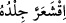
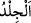
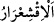
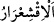
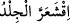
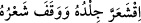
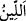
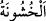
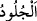
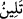

hayvanlarla ilgili olan rükûya, sonra bitkilerle ilgili olan secdeye, sonra da madenlerle
ilgili olan teşehhüde (ka’de) geçer. Böylece Allah “salât/namaz” ile ruhun geldiği yolu
izleyerek Rabbinin huzuruna geri dönmesine işâret etmektedir. İşte bu yüzden Hz.
Peygamber (a.s.): “Namaz, mü’minin mi’râcıdır.”[100] buyurmuştur.
İkincisi, her âyetin lafızlarının sûreti yönüyle başka bir âyetle benzerliği vardır. Fakat
mânâlar, işâretler, sırlar ve hakîkatler sonsuz olarak mesânîdir/tekrarlanır. “De ki:
Rabbimin kelimeleri için, deryalar mürekkep olsaydı, .. bu sözler bitmeden deryalar
tükenirdi.” (el-Kehf, 18/109) âyeti ile buna işâret edilmektedir.”
“Rablerinden korkanların, bu Kitab’ın etkisinden tüyleri ürperir,”
Bu ifâde, Kur’an’ın kendi içinde taşıdığı özellikleri ve onun en güzel söz olduğunu
anlattıktan sonra, onun, dinleyicilerinde bıraktığı etkileri açıklamak için sevk edilmiş
başlangıç cümlesidir.
“ demek, el-Kâmûs’ta belirtildiği gibi ‘onu bir titreme aldı’ demektir. el-
Müfredât’ta bildirildiği üzere “ de bedenin kabuğudur. Bazıları da derler ki: “ fiilinin aslı, korku ve endişe sırasında insan cildinde hasıl olan titreme gibi bir
değişikliktir. el-İrşâd’da ise şöyle der: “ kasılma demektir. Cild şiddetli bir
şekilde kasıldığında “ denir. Kişinin, başına ansızın geliveren kötü bir
durumdan dolayı şiddetli bir korku hâli ârız olduğu zaman “ (derisi
kuruyup tüyleri diken diken oldu) denir.
İfadede ya temsil ve tasvir yolu ile onların ne kadar fazla korktuklarını anlatmak ya da
bu hâlin onlarda gerçekten ortaya çıktığını belirtmek murâd edilmiştir. İbareden ilk anda
anlaşılan da budur. Çünkü, korkma esnâsında böyle bir durum meydana gelir ve insan
bunu kendisinden de bilir. Bu kalbî etkilenmeden dolayı da ortaya çıkabilir. Onun için
bu görüş yabana atılamaz.
Mânâ şöyledir: Onlar Kur’an’ı dinledikleri ve onun dehşetli tehdîd âyetlerini
işittikleri zaman, kendilerine öyle bir korku ve endişe ârız olur ki bundan dolayı derileri
ürperir, yâni kendilerini bir titreme alır ve tüyleri diken diken olur. Ondan titrer; yâni
Kur’an’daki vaîd korkusundan. Rablerinden korkanların tenlerindeki derileri titrer.
“Derken hem bedenleri ve hem de gönülleri Allah’ın zikrine ısınıp yumuşar.”
“ (yumuşaklık)”, “ (sertlik)”in zıddı olup cisimler için kullanılır. Fakat
zamanla gerek maddî varlıklar için gerekse mânevî şeyler için kullanılır olmuştur. el-
Müfredât’ta belirtildiği gibi buradaki “ (deriler) bedenlerden, “ (kalbler) ise
(kalbler) ise
nefislerden ibârettir.
Yâni, sonra Allah’ın rahmetini ve herkesi içine alan mağfiretini hatırlayınca bedenleri
ve nefisleri yumuşar, endişe yerini ümide, korku da rağbete bırakmak sûretiyle onlarda
bulunan korku ve tutuldukları titreme zail olur. Sonra Allah’ın rahmet ve mağfireti
sebebiyle derileri ve gönülleri yumuşar ve sükûnete ererler.
“ fiilinin “” ile geçişli hâle getirilmesi, sükûnet ve rahatlama mânâsını içermesi